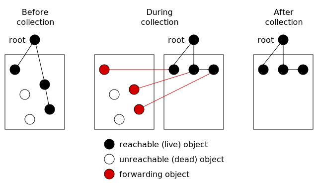

Memory Management Glossary: C¶
A | B | C | D | E | F | G | H | I | J | K | L | M | N | O | P | Q | R | S | T | U | V | W | X | Y | Z
- C89
See
C90.
- C90
Also known as
C89.
A revision of the ANSI/ISO Standard for the C programming language. Although more than twenty years old, it remains the only form of Standard C that is supported by all the major compilers, including Microsoft Visual C.
In the MPS
The public interface conforms to this standard. See Interface conventions.
- C99
A revision of the ANSI/ISO Standard for C the C programming language.
In the MPS
Keyword arguments can be conveniently passed to functions using C99’s compound literal syntax. See Keyword arguments.
- cache(1)
Also known as
memory cache, cache memory.
A processor’s memory cache is a small piece of fast, but more expensive memory, usually static memory(1), used for copies of parts of main memory. The cache is automatically used by the processor for fast access to any data currently resident there. Access to the cache typically takes only a few processor clock cycles, whereas access to main memory may take tens or even hundreds of cycles.
What part of main memory is resident in a cache, and the mechanisms by which it is kept consistent, are quite varied. See cache policy.
Some systems have more than one level of cache. “Level 1 cache” is the fastest, smallest storage level, “level 2” the next fastest, and so on.
See also
- cache(2)
A cache is any small, fast piece of memory(1), used for copies of data that normally reside in a larger, slower piece of storage. The cache is used to speed up access to data resident in the slower storage.
In a typical cache, recently used data is resident in the cache (although the details of this depend on the cache policy). A cache(1) is the most common example of a cache(2).
See also
- cache memory
See
- cache policy
Any cache(3) uses a cache policy to decide which data to store. A cache policy is an attempt to predict the future, so that the cache will provide swift responses to future requests.
Cache policy may be implemented in hardware, software, or a combination of both. Some systems allow programs to influence cache policy, by giving hints or directions about future use of data.
There are three main aspects of cache behavior which the cache policy can affect:
- Fetch policy. This determines which data is fetched into the cache, usually as a result of receiving a request for data that isn’t cached.
- Eviction policy. This determines which data is discarded from the cache to provide space for newly fetched data.
- Write policy This determines how and when modifications to cached data are synchronized with the underlying storage.
- caching(3)
Also known as
memoization, tabling.
Caching is a heuristic that stores answers to questions asked in the past in a cache or a table, in order that they may be more quickly answered in the future. This process is also called memoization and tabling (by the Prolog community).
A “look-ahead cache” attempts to store answers to questions that will be asked soon. A cache(2) is a common example of a cache(3).
- cactus stack
Also known as
spaghetti stack.
A cactus stack is a stack with branches. When diagrammed, its shape resembles that of a saguaro cactus.
In languages that support continuations, activation records can have indefinite extent. One technique for implementing continuations is not to copy the activation records that are captured, but rather to create a fork in the stack below the captured stack frames, so that new frames appear as a parallel branch. Often the process of forking is done lazily: captured frames are only duplicated if they are modified.
- card
- A card is a division of memory, all cards being of equal size (in a particular area of discourse). A card is usually bigger than a word and smaller than a page. Cards are used in a technique called card marking whereby dirty bits (which record which portions of old generations have been written into) are maintained for each card. Often the use of cards will also entail the use of a crossing map.
- card marking
A technique for managing pointer stores(1) into old generations (which in turn is used to track inter-generational pointers). Each generation is divided into a number of equal-sized cards, and when a generation is written into, the particular card written to is recorded (often by using a bitmap). Subsequently, when scanning an older generation in order to collect a younger generation, only the recorded cards (in the old generation) need to be scanned.
See also
- cell
See
- Cheney collector
Also known as
Cheney scan.
A Cheney collector uses the tospace of a two-space collector as a queue of objects remaining to be scanned, thus eliminating the need for recursion when tracing the graph of objects.
- Cheney scan
See
- clamped state
In the MPS
One of the three states an arena can be in (the others being the unclamped state and the parked state). In the clamped state, no object motion occurs and the staleness of location dependencies does not change. However, a garbage collection may be in progress. Call mps_arena_clamp() to put an arena into the clamped state.
- client arena
In the MPS
An arena class that gets its memory(2) from the client program. See Client arenas.
- client object
In the MPS
A formatted object that contains data from the client program. One of three types of formatted objects, the other two being forwarding objects and padding objects.
- client program
See
- closure
A closure is a function or procedure that is saved along with the current bindings from enclosing blocks for later invocation.
Some programming languages, such as ALGOL, permit nested blocks to access the local variables of enclosing blocks. Lisp-like languages further permit such an inner block (in particular a function or procedure) to be saved for later invocation. The act of saving such an inner block along with the current bindings of variables in the enclosing blocks that are referenced by the inner block, is called closing over or capturing those variables. The object created is termed a closure. A closure is invoked just like the function from which it was built, passing whatever parameters the function accepts, but when the function executes, the variables that belong to enclosing blocks will have the bindings that were in effect when the closure was created.
Relevance to memory management
A closure is typically implemented by saving both the function and any activation records that contain variables referenced by the function. The closure creates additional implicit references to the bindings closed over and hence must be accounted for in any memory management scheme. The closure itself is an object that must be managed and may have either dynamic extent or indefinite extent depending on whether it is only used by inner blocks of the creating block or passed out of the creating block.
See also
- coalesce
Coalescing is the act of merging two adjacent free blocks.
Coalescing reduces external fragmentation, but is not totally effective.
Coalescing can be done as soon as blocks are freed, or it can be deferred until some time later (known as deferred coalescing), or it might not be done at all.
Wilson et al. (1995) has details about fragmentation, and which coalescing strategies are effective under what circumstances.
- collect
An object is collected when it is reclaimed by a garbage collector.
Similar term
- collection
See
- collection cycle
Also known as
collection.
A collection cycle is a single complete execution of a tracing garbage collection algorithm.
Each collection cycle includes (not necessarily in strict order) choosing a condemned set; scanning roots and objects that have not been condemned; tracing the object graph to find all condemned objects that are reachable; and reclaiming those that were not reachable.
In non-incremental garbage collection, the mutator pauses at the start of a collection cycle and cannot continue until it is complete. In incremental and parallel garbage collection, a collection cycle can be interleaved with, or simultaneous to, mutator activity.
- collector(1)
See
- collector(2)
In a garbage-collected system, the part that executes the garbage collection code, which discovers unused memory(1) and reclaims it.
For purposes of describing incremental garbage collection, the system is divided into the mutator and the collector. These can be separate threads of computation, or interleaved within the same thread.
Historical note
This term is due to Dijkstra et al. (1976).
Opposite term
- color
colour - In a tri-color marking scheme, each node has a one of three colors: black, white, or gray. In a treadmill, nodes may also be colored off-white.
- commit limit
In the MPS
The commit limit is a limit on the committed memory(2) that the arena will obtain from the operating system. It can be changed by calling mps_arena_commit_limit_set().
- committed(1)
See
- committed(2)
In the MPS
A block has been committed if it is fully initialized and is under the management of the MPS, as opposed to a block that is merely reserved. See Allocation point protocol.
- compactifying
See
- compaction
Also known as
compactifying.
Compaction is the process of moving live objects to eliminate dead space between them. Some people call this compactifying, to distinguish it from techniques for compressing data structures.
Compaction is used to avoid external fragmentation and to increase locality of reference.
- composite object
In the PostScript language, composite objects are the boxed objects.
Unlike a simple object, the main data (what PostScript calls the value) in a composite object are stored separately, in VM(2). Several composite objects can share the same value.
Similar term
Opposite term
- comprehensive
A collector(1) is comprehensive if all garbage (or, all unreachable objects) is reclaimed in one collection cycle.
See also
- concurrent garbage collection
- condemned set
Also known as
threatened set.
Condemned objects are those which are candidates for recycling within a collection cycle.
At the start of a collection cycle, the collector(1) may choose to condemn some objects (the condemned set or threatened set) but not to condemn others (the immune set). Objects that are not condemned are assumed to be live and behave as roots for the purposes of that collection cycle.
Many simple tracing garbage collection algorithms begin by condemning all objects, but generational garbage collectors will condemn individual generations or combinations of generations. Often young generations are condemned but older ones are not, because objects in older generations are less likely to have become unreachable.
In collectors using tri-color marking, at the start of a collection cycle the condemned set is exactly the set of objects that the collector colors white.
Opposite term
- connected
Objects are connected if and only if one contains a reference to the other.
See also
- cons(1)
In Lisp, cons is a primitive operation creating a list element (from English “CONStruct”). By extension, a cons is the element created.
- cons(2)
See
- conservative garbage collection
In conservative garbage collection, the layout of objects and roots is not known, instead the collector(1) assumes that any field that looks like a pointer might be a reference.
Conservative collectors can work with programs where information about the memory(2) layout is not available, because, for example, the language doesn’t support garbage collection.
A conservative collector doesn’t need to know the format of the objects, it just needs some idea of where the object boundaries are. It regards any field value that looks like a pointer to an object (or, sometimes, into the middle of one), as preventing the recycling of that object. It can’t move objects, because then the references to the moved objects would need to be updated, and such ambiguous references must not be modified, in case they weren’t pointers after all. Therefore, conservative collectors are usually mark-sweep collectors.
Because references are ambiguous, some objects may be retained despite being actually unreachable. In practice, this happens rarely, and refinements such as black-listing can further reduce the odds.
Opposite term
- constant root
In the MPS
A root that the client program promises not change after it is registered, by specifying the root mode MPS_RM_CONST when calling a registration function such as mps_root_create().
- constructor(1)
A constructor is a function or method that allocates and initializes an object.
Opposite term
- constructor(2)
In C++, a constructor is a member function that is used to initialize a newly-allocated object.
The actual allocation of memory(2) is performed by operator new or the compiler (for static and stack allocation), and the new block is then passed to the appropriate constructor.
See also
- continuation
A continuation is the data required to restore an execution context after invocation of another context, typically as a subroutine.
Relevance to memory management
If continuations can be represented as first-class objects, as in Scheme, the execution contexts can no longer be stored on a stack, instead, (at least some) activation records have to be heap-allocated.
See also
- control stack
Also known as
activation stack, execution stack.
A stack that stores activation records, particularly subroutine return information, is known as a control stack.
Typically the control stack is supported and used by the hardware architecture and the operating system, limiting the types and sizes of objects that can be stored on it. Often, only one type of object, a stack frame, is permitted, and the layout of that is defined by the hardware architecture.
Relevance to memory management
Theoretically, a control stack is simply an array of activation records, and hence just another object managed by the memory manager. In practice, the control stack is central to the performance of the hardware architecture and may require special treatment. In particular, it may not be accessible as ordinary memory(2), or it may have its own cache(2) with specific updating requirements.
Similar term
See also
- cool
In the MPS
A variety in which most MPS functions assert that their data structures are valid, even functions on the critical path. See Building the Memory Pool System. Compare hot and rash.
- copy method
In the MPS
A copy method is one of the methods in an object format. Formerly, the MPS called this method to copy a formatted object during moving garbage collection. Now it just copies the bytes and the copy method is ignored.
- copying garbage collection
Also known as
scavenging garbage collection.
Copying garbage collection is a kind of tracing garbage collection that operates by relocating reachable objects (this is sometimes called scavenging) and then reclaiming objects that are left behind, which must be unreachable and therefore dead.
A copying garbage collection relies on being able to find and correct all references to copied objects.
Copying garbage collection.
Similar term
See also
- core
A historical synonym for main memory, deriving from the cores or ferrite rings which were once the main technology used to implement it.
Similar term
- creation space
In generational garbage collection, when generations are divided into buckets, the creation space is where new objects are created in each generation.
This term is sometimes used as a synonym for nursery space.
Opposite term
See also
- critical path
- crossing map
Where memory(2) has already been divided into some fixed-sized unit (for example, pages or cards), a crossing map records where objects lie across the boundaries of the fixed-sized units. In other words, which fixed-sized units do not start with the beginning of an object.
A system which implements remembered sets by page marking or card marking needs to scan all the pointers in the page or card. If the system can not scan partial objects (or requires information in the object header in order to scan a partial object), a crossing map is necessary to find the beginning of the first object in the unit.
Relevance to memory management
In a sense, a crossing map is an optimization of tagged architecture. It represents the minimum information necessary to determine how to interpret any word of memory.
- cyclic data structure
- A data structure is cyclic if some of its references form a loop; that is, there’s an object that can be reached by following references from itself.

Previous topic
Next topic
Downloads
MPS Kit release 1.111.0
All MPS Kit releases
Issues
Known issues
Issues fixed in release 1.111.0